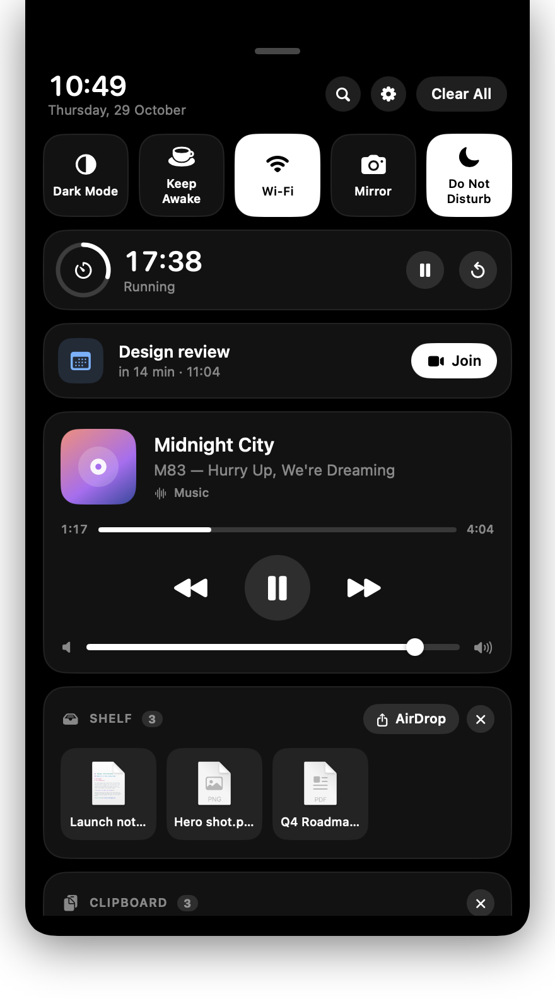
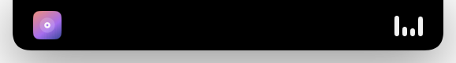
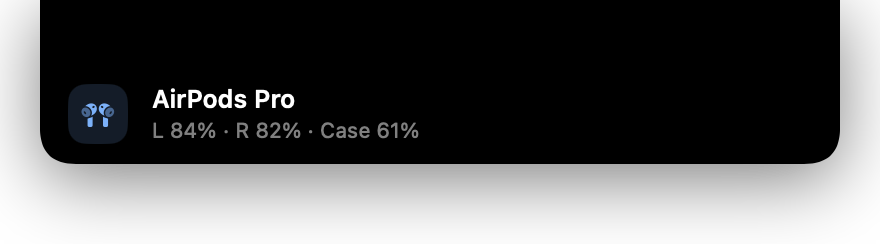
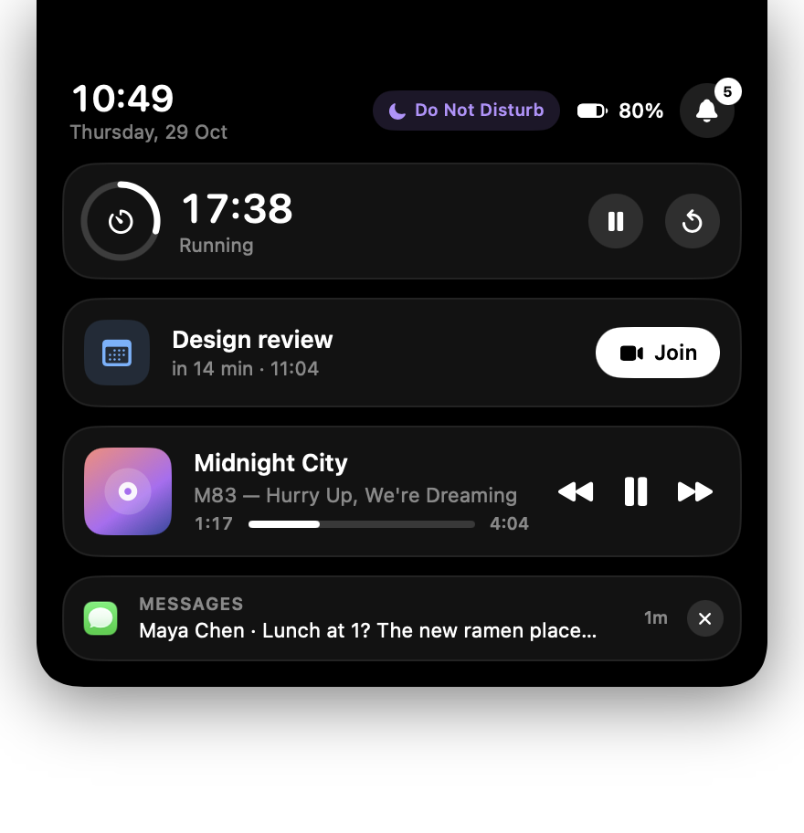
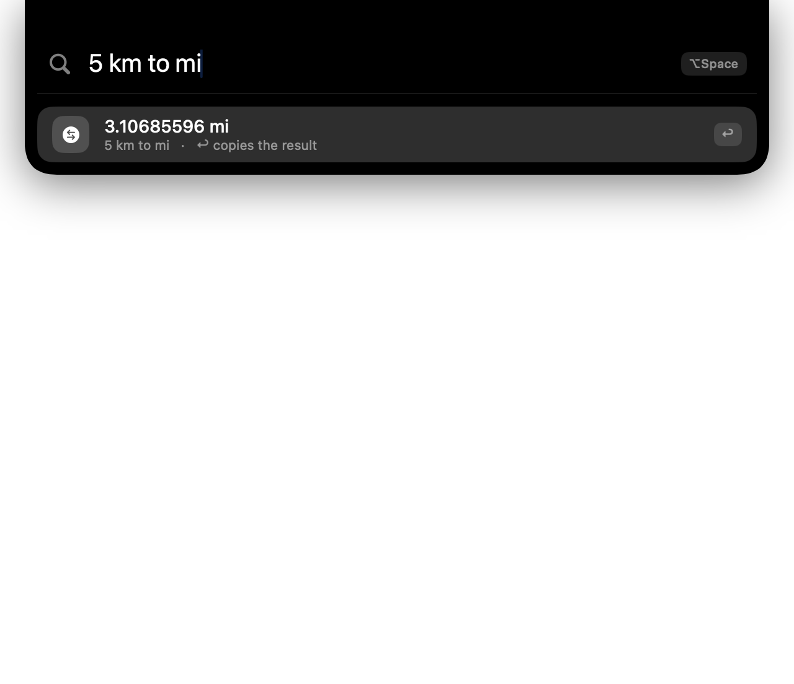

Your notch, now a Dynamic Island.
NotchIsland lives inside the MacBook notch and grows out of it: what's playing, what just arrived, what's charging, what's next. One black surface, flush with the bezel, that only shows up when it has something to say.
MIT licensed · no accounts, no network, no analytics · all releases

Live, where you're already looking
Everything that matters right now, right under the notch.
Hover for a glance, click for the full shade, press ⌥ Space to launch anything. The island stays true black so it blends with the bezel and disappears when it's idle.
Now Playing, from anywhere
Music, Spotify and VLC, plus whatever is playing in a Chrome, Brave or Edge tab. Artwork in the ear, bouncing bars while it plays, a scrubber, transport and the system volume slider.
A real notification shade
Banners drop out of the notch, then collect in a shade grouped by app with history, Clear and Clear All. Private messages stay on your Mac: it reads Notification Center's own store.
Live activities
Charger in or out, low battery, volume changes, AirPods connecting with left, right and case battery, downloads with real progress, a finished timer. Long-running ones shrink into a ring in the ear.
⌥ Space launcher
Fuzzy app search ranked by what you open most, Spotlight file search, a calculator, unit conversion and quick actions like lock, sleep or dark mode. The hotkey is swallowed, so nothing else hears it.
Timer and next event
Pomodoro presets with a countdown ring in the ear and a chime at the end. Your next calendar event sits in the shade with a one-tap Join for Zoom, Meet, Teams and friends.
Shelf
Drag files onto the notch to park them. Drag them back out into any app later, open them, or AirDrop the whole shelf in one go.
Quick toggles and Focus
Dark Mode, Keep Awake, Wi-Fi and a camera check for calls. The Focus tile mirrors the system, lighting up with “Do Not Disturb” or whatever mode you're in.
Mic, camera, Focus indicators
Small coloured marks beside the notch tell you when the microphone or camera is live, when a Focus is on and when the display is being kept awake.
Private by design
No account, no server, no analytics, no network calls. Everything is read from your own Mac, and the full source is right there on GitHub.
One surface, many states
It only grows as much as it needs to.
Idle, the island is just the notch. Everything below flows out of it with the same width and the same black, so the notch and whatever drops down always read as one thing.




Install
Up and running in a minute.
NotchIsland is a tiny, self-contained app. It needs macOS 13 Ventura or later and a Mac with Apple silicon (every notched MacBook has one).
Download and drag
Open NotchIsland.dmg and drag NotchIsland into Applications. It runs as a menu bar app, with no Dock icon.
Open it the first time
Right-click NotchIsland in Applications and choose Open. On macOS 15 and later, open it once, then allow it in System Settings → Privacy & Security → Open Anyway.
Grant what you use
Full Disk Access for notifications: System Settings → Privacy & Security → Full Disk Access → turn on NotchIsland, then relaunch. The island shows a hint until then; click it to jump there. Accessibility for the hotkey, Automation the first time a player is read, Calendar and Camera when you first use them. Settings → Permissions shows the state of each.
Open source
Swift, SwiftUI and nothing else.
One Swift package, no dependencies, MIT licensed. Clone it, run it, read every line that touches your notifications. Issues and pull requests are welcome.
# run from source git clone https://github.com/Edwardrem/NotchIsland.git cd NotchIsland swift run # or build the .app and .dmg yourself scripts/make-dmg.sh 1.0.1
About the maker
Built by Rufaro Edward Mutepfa.
NotchIsland started as a small itch: the notch takes up space on every MacBook, so it may as well earn it. It is built and maintained in the open.

Rufaro Edward Mutepfa
Creator and maintainer of NotchIsland
If NotchIsland saves you a glance at the menu bar, say hello. If something is off, open an issue on GitHub and it will get looked at.